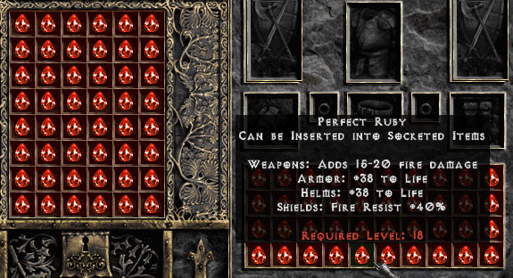

I wanted a scripting language that was more powerful than Perl, and more object-oriented than Python. That's why I decided to design my own language
ClassName
ModuleName
COSTANTS
method_name
variable_name
$global_variable
@instance_variable
@@static_variable
ruby-1.9.2-p180 :001 > 1.class
=> Fixnum
ruby-1.9.2-p180 :002 > "hello, string".class
=> String
ruby-1.9.2-p180 :003 > /regexp/.class
=> Regexp
ruby-1.9.2-p180 :004 > String.class
=> Class
ruby-1.9.2-p180 :009 > str="ruby"
=> "ruby"
ruby-1.9.2-p180 :010 > scentence="learn #{str}"
=> "learn ruby"
ruby-1.9.2-p180 :011 > str="ruby"
=> "ruby"
ruby-1.9.2-p180 :012 > scentence=%{learn "#{str}"}
=> "learn \"ruby\""
ruby-1.9.2-p180 :013 > scentence=%<learn "#{str}">
=> "learn \"ruby\""
ruby-1.9.2-p180 :014 > scentence.reverse
=> "\"ybur\" nrael"
ruby-1.9.2-p180 :015 > scentence.length
=> 12
ruby-1.9.2-p180 :019 > kerker = lambda do |a,b,c|
ruby-1.9.2-p180 :020 > puts a,b,c
ruby-1.9.2-p180 :021?> end
=> #<Proc:0x00000001fac598@(irb):19 (lambda)>
class Girlfriend
end
class Girlfriend
attr_accessor :name, :age, :height,
:weight, :gender
end
new_happy = Girlfriend.new
new_happy.name = "***"
new_happy.age = 18
new_happy.height = 155
new_happy.weight = 41
new_happy.gender = :female
class Girlfriend
def initialize(hash)
@name = hash[:name]
@age = hash[:age]
@height = hash[:height]
@weight = hash[:weight]
@gender = hash[:gender]
end
end
new_happy = Girlfriend.new(
{:name => "***",
:age => 18,
:height => 155,
:weight => 41,
:gender => :female
})
new_happy = Girlfriend.new(
:name => "***",
:age => 18,
:height => 155,
:weight => 41,
:gender => :female
)
class Girlfriend
def decide_launch()
return "no comment"
end
def self.static_method()
end
end
class Wife < Girlfriend
attr_accessor :husband, :bank_account
def initialize(hash)
@husband = hash[:husband]
@bank_account = hash[:bank_account]
super
end
def rob_salary
puts "#{@name}takes #{@husband}'s salary away!"
end
end
new_wife = Wife.new(
:name => "***",
:age => 18,
:height => 155,
:weight => 41,
:gender => :female,
:husband => :me,
:bank_account => 0
)
super
super()
super(arg1, arg2)
def my_method(arg1, arg2, arg3)
def my_method(arg1, arg2, arg3 = 0)
def my_method(arg1, arg2, *args)
def my_method(arg1, &block)
def my_method(arg1, &block)
puts block
yield
end
def my_method(&block)
yield
end
if a>b
puts a
elsif b<a
puts b
else
puts "equal"
end
puts "Game Over" if hp == 0
puts "Game Over" unless hp > 0
case input
when 1, 2, 3
puts "1~3"
when 4, 5..10
puts "4~10"
end
or
case input
when "How are you?"
puts "I'm fine, thank you. And you?"
when /.*\./
puts "Sorry, I can't understand you."
end
while a>b
puts a
a=a-1
end
for i in 0..9 do
puts i
end
or
for e in ['a', 'b', 'c'] do
puts e
end
/Regexp/